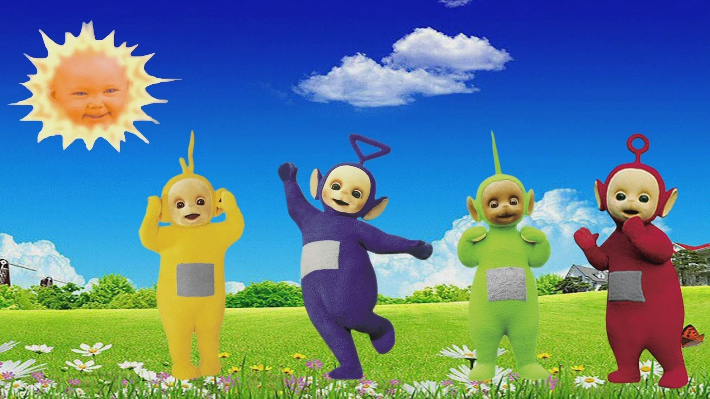
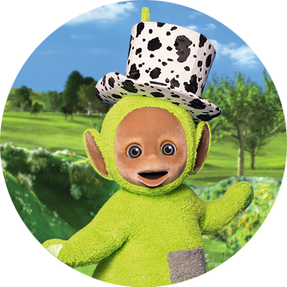
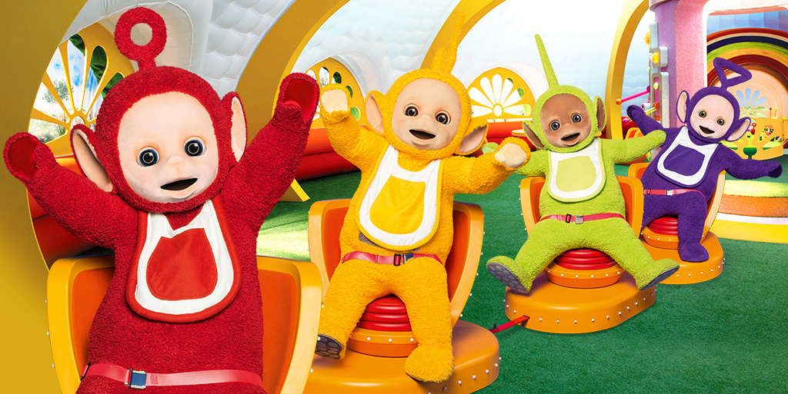

Tubby Tubby
Welcome to the Teletubby Land!
You're in for an adventure, humans!
hee hee
We are the 4 Teletubbies who frolic around in Teletubby Land. Each of us have a computer screen on our stomach that aids us to peek into your lives!
hee hee hee
Meet Us!

PO
Hi human, I am Po, the smallest and cutest of all the teletubbies with a round ring sitting on my head. heee hee... Everyone loves me so much! I love wearing caps, and ride my pretty cute and speedy cycle that keeps falling though, Ow Ow! But I manage things quite well. People say I am very innocent and keep giving me warm hugs. I have big wide eyes that observe and a big tummy too. I laugh and eat a lot! hee hee! Go, meet Laa Laa, my besstttt friend.

LAA LAA
Helloooo friends, I am Laa Laa, the yellow beauty who loves to roam around with her dearest Po! I am a star performer and loves to sing, and dance around with my clan. Sometimes, I try to balance my big orange round ball on my small twisted J-shaped antennae, and then I fall on the ground and laugh. Hee hee. I am a wise and happy go person. Now, meet Tinky Winky, my partner in mischieves.

TINKY WINKY
Hi human, I am Tinky Winky, the biggest and eldest of all the teletubbies. My purple twirls are enough to swoon a stable heart and this triangular symbol on my head has been a part of controversies for so long. Despite that, I am jolly and keep playing around to make you laugh at your best. hee hee. My red bag is very dear to me and carries all my secrets. So, better stay away from it if you want a life, I mean a happy life. hee hee. Also, here's Dipsy, my nice friend.

DIPSY
Helloooo friends, I am Dipsy, the green iconic dancer whose moves are so incredible that none can share the stage with him. When I dance, the ground trembles with energy and people cheer at my grooves. hee hee. After getting my skin tanned under the baby sun, I decided to wear a white Top Hat with black pockmarks that makes me look even more handsome than I already am. I'll teach you a few easy dance steps today. So, shake your lazy waist while I am posing for a picture in my hat. hee hee.
Now, that you know us, you must also know that we giants love to eat... ummm not humans, hee hee, but Tubby Custard and Tubby Toast. Wanna grab them too?
Come, join us for the supper!
Tubby Tubby
WATCH US
